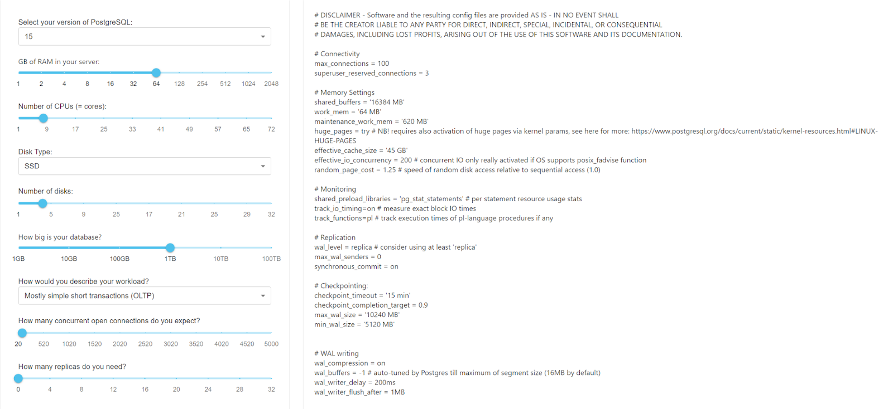
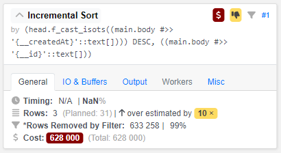

In this article, we will explore performance diagnostic methods for PostgreSQL, consisting of three key steps:
Step 1: Optimize the cluster
To enhance the performance of your database, employ the following PostgreSQL performance diagnostic methods:
- Apply vertical or horizontal scaling and then analyze the queries;
- Set up the configuration parameters of the deployed cluster. For example, use online configuration parameter generators. See more details in the CYBERTEC service.
An example of generating optimal settings for a cluster based on entered server characteristics:

Step 2: Analyze the logs
Please note that enabling query analyzers may consume approximately 10% of resources. However, after completing the analysis and optimizing queries, performance can significantly improve.
You can use built-in tools to analyze PostgreSQL performance, identifying bottlenecks and slow queries:
pg_stat_statements tool
One of the most useful tools for performance analysis in PostgreSQL, this module gathers statistics on executed SQL queries, including their text, execution time, and call coun.
- To enable
pg_stat_statements, set the parameter in postgresql.conf:
shared_preload_libraries = 'pg_stat_statements';
- Restart PostgreSQL and execute a query for performance analysis:
SELECT query, total_time, calls FROM pg_stat_statements ORDER BY total_time DESC LIMIT 10;
pg_stat_kcache tool
This extension monitors the state of the operating system cache used by the database, helpful for assessing caching efficiency and potential bottlenecks.
- To enable
pg_stat_statements, set the parameter in postgresql.conf:
shared_preload_libraries = 'pg_stat_kcache'
- Restart PostgreSQL and execute queries to analyze cache performance.
SELECT * FROM pg_stat_kcache; # General statistics query
SELECT * FROM pg_stat_kcache_buffers; # Shared buffers cache statistics
SELECT * FROM pg_stat_kcache_files; # File cache statistics
SELECT * FROM pg_stat_kcache_directories; # Directory cache statistics
auto_explain tool
This module automatically analyzes queries and displays the execution plan for queries taking a long time to execute.
To enable auto_explain, set the parameter in postgresql.conf:
session_preload_libraries = 'auto_explain'
auto_explain.log_min_duration = 1000; ## Log queries taking more than 1000 milliseconds
auto_explain.log_analyze = true; ## Log output of EXPLAIN ANALYZE command
auto_explain.log_buffers = true; ## Enable buffer usage statistics
log_min_duration_statement tool
This parameter allows you to configure logging for queries taking longer than the specified duration in milliseconds. For example, to log queries taking more than 1000 milliseconds, set the parameter in postgresql.conf:
log_min_duration_statement = 1000; ## Log queries taking more than 1000 milliseconds
Step 3: Analyze the plans
Optimizing queries can be complex and often involves an iterative process. Make changes gradually and measure the impact of each change on query performance. It is also recommended to test optimizations in a staging environment before applying them to the production database to ensure there are no unforeseen consequences.
The PostgreSQL query plan describes the execution of an SQL query, including sorting, filtering, and resource usage during execution.
Query Text: SELECT (main.body) FROM "head"."tasks" AS main WHERE ("head".f_cast_isots(main.body#>>'{__deletedAt}') IS NULL AND (((main.body#>>'{__item}')::jsonb) = '{"namespace":"service_desk","code":"night_request_handling","id":"018b822c-e7b0-c751-1914-2b698ad2b01d"}'::jsonb) AND ((main.body#>>'{__parentId}')::text) IS NULL) ORDER BY "head".f_cast_isots(main.body#>>'{__createdAt}') DESC, (main.body#>>'{__id}') LIMIT 11 OFFSET 0 |
Let's break down the various parts of the plan mentioned in the above example:
Query Text. The analyzed SQL query. Selects data from a table namedtasksin theheadschema with specific conditions and orders the results;Limit. Information about the expected cost of the query and the number of rows it expects to return. In the provided example, the query expects to return 11 rows;Output. Enumeration of columns that will be included in the query's output data: body, a computed expression, and another computed expression;Buffers. Shows the application of buffers, the number of read operations, and the number of write operations. It determines the overall fetches, reads, and writes;I/O Timings. Information about the time spent on read and write operations;Incremental Sort. Sorting operation, which is part of the query execution. It defines the sorting criteria and memory usage;Index Scan Backward using.The main operation during query execution. It's a scan of thetasks:f___createdAtindex sed for filtering and retrieving rows from thetaskstable based on specified conditions. The conditions are listed in theFilter, section, checking for specific values in JSONB data and the absence of a value in the__parentIdfield.Rows Removed by Filterindicate how many rows were filtered based on these conditions.JIT. Information about JIT compilation of functions and optimization settings.
Plan visualization
You can also analyze the execution of the SQL query. Using plan visualization provides detailed information on how PostgreSQL executes the query and potential performance issues. You can use pgAdmin or third-party services for this purpose.
Example of visualization:
